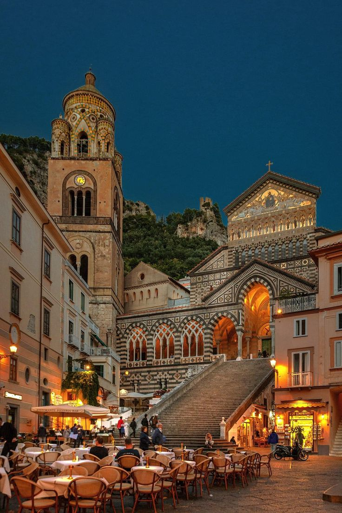

Amalfidə görməli olduğunuz yerlər
Amalfi Katedrali (Duomo di Amalfi) |
Valle delle Ferriere |
Arsenale della Repubblica |
|---|---|---|
|  |  |
 |
Amalfi Coast |
Villa Rufolo |
Villa Cimbrone |
|---|---|---|
 |
 |
 |